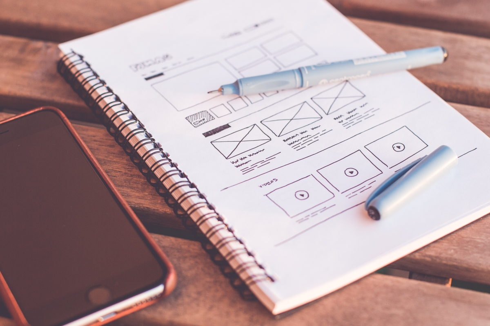
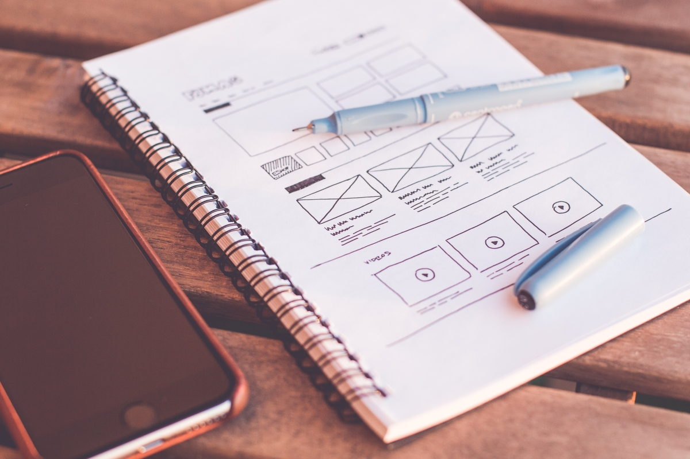
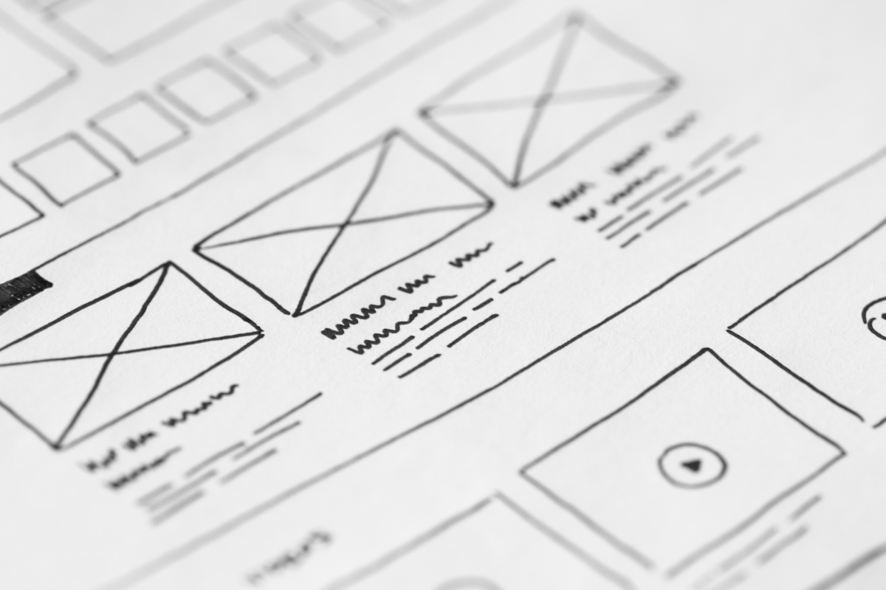
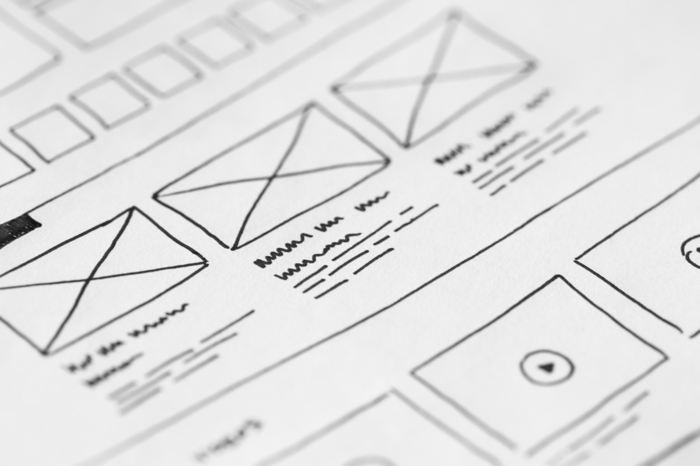

Overview
Purpose
I aim to demonstrate my proficiency in various programming languages, frameworks, and tools, as well as my ability to create engaging and functional websites that meet the needs and expectations of clients using visually appealing and user-friendly designs.
Audience
Anyone who wants to share information, connect with others, or sell products or services can benefit from having a website.
Branding
Website Logo
Style Guide
Color Palette
Palette URL: https://coolors.co/396e94-e7c24f-a43312-381d2a-aabd8c| Primary | Secondary | Accent 1 | Accent 2 |
|---|---|---|---|
| [#0A1045] | [#F9E900] | [#F6AF65] |
Typography
Heading Font: [Poppins]
Paragraph Font: [Roboto]
Normal paragraph example
Welcome to my web developer website! As a visitor to this site, you are most certainly looking for a qualified and experienced web developer to assist you in bringing your online presence to life. You realize the value of having a high-quality and user-friendly website that represents your brand and engages your target audience, whether you are a small company owner, an entrepreneur, or a creative worker.
Colored paragraph example
As a web developer, I understand the difficulties that come with establishing an efficient website, and I am committed to offering new solutions that match each client's specific demands. My portfolio demonstrates a wide range of talents, ranging from front-end development with HTML, CSS, and JavaScript to back-end programming with PHP, MySQL, and other languages and frameworks.
Navigation
Site Map
Content
Home page
Whether you are seeking for a total website redesign or simply need help with a few modifications, I am devoted to working together with you to build a website that is personalized to your unique goals and objectives. My approach is founded in communication, openness, and attention to detail, and I pride myself on producing high-quality work that surpasses expectations.
Images for the Home page
 

Web Design
[Written copy for the Page 2 here]
Images for the Page 2
 Image by rawpixel.com on Freepik
Image by rawpixel.com on Freepik
 Image by creativeart on Freepik
Image by creativeart on Freepik
Web Development
The process of constructing websites using computer languages such as HTML, CSS, and JavaScript is known as web development. It entails designing the user interface, creating code, and deploying the website to a web server.
Images for the Page 3
 

Wireframes
Create three wireframes for your site. One for each page and list them here
Home
[Any additional details about home that the wireframe does not make clear]
[Page 2]
[Any additional details about page 2 that the wireframe does not make clear]
[Page 3]
[Any additional details about page 3 that the wireframe does not make clear]